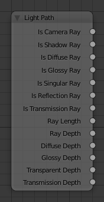

Nút Đường Đi của Ánh Sáng -- Light Path Node¶

Light Path Node.
The Light Path node is used to find out for which kind of incoming ray the shader is being executed; particularly useful for non-physically-based tricks. More information about the meaning of each type is in the Light Paths documentation.
Đầu Vào -- Inputs¶
Nút này không có đầu vào.
Tính Chất -- Properties¶
Nút này không có tính chất nào cả.
Đầu Ra -- Outputs¶
- Tia Máy Quay Phim -- Is Camera Ray
- 1.0 if shading is executed for a camera ray, 0.0 otherwise.
- Tia Bóng Tối -- Is Shadow Ray
- 1.0 if shading is executed for a shadow ray, 0.0 otherwise.
- Tia Khuếch Tán -- Is Diffuse Ray
- 1.0 if shading is executed for a diffuse ray, 0.0 otherwise.
- Tia Bóng Bẩy -- Is Glossy Ray
- 1.0 if shading is executed for a glossy ray, 0.0 otherwise.
- Tia Lập Dị -- Is Singular Ray
- 1.0 if shading is executed for a singular ray, 0.0 otherwise.
- Tia Phản Xạ -- Is Reflection Ray
- 1.0 if shading is executed for a reflection ray, 0.0 otherwise.
- Tia Lan Truyền -- Is Transmission Ray
- 1.0 if shading is executed for a transmission ray, 0.0 otherwise.
- Chiều Dài của Tia Xạ -- Ray Length
- Distance traveled by the light ray from the last bounce or camera.
- Độ Sâu của Tia -- Ray Depth
Number of times the ray has "bounced", i.e. been reflected or transmitted on interaction with a surface.
Ghi chú
Passing through a transparent shader does not count as a normal "bounce".
- Độ Sâu của Khuếch Tán -- Diffuse Depth
- (Todo)
- Độ Sâu của Ánh Bóng Bẩy -- Glossy Depth
- (Todo)
- Độ Sâu của Độ Trong -- Transparent Depth
- Returns the number of transparent surfaces passed through.
- Độ Sâu Lan Truyền -- Transmission Depth
- Replace a Transmission light path after X bounces with another shader, e.g. a Diffuse one. This can be used to avoid black surfaces, due to low amount of max bounces.